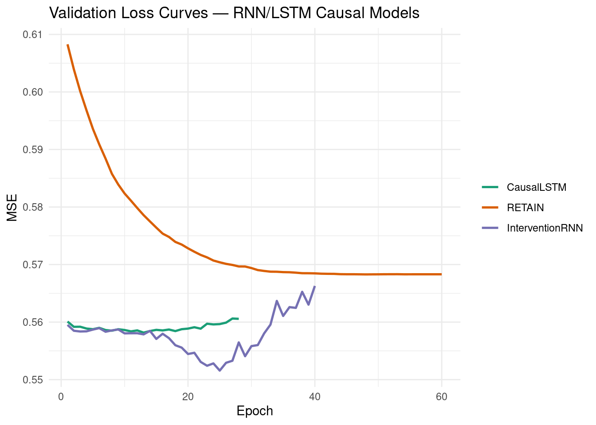
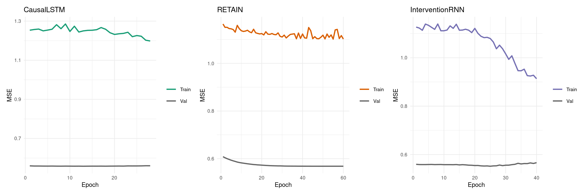
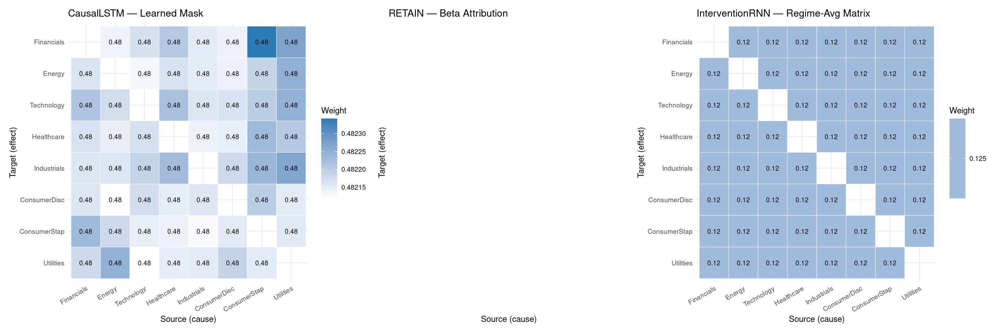
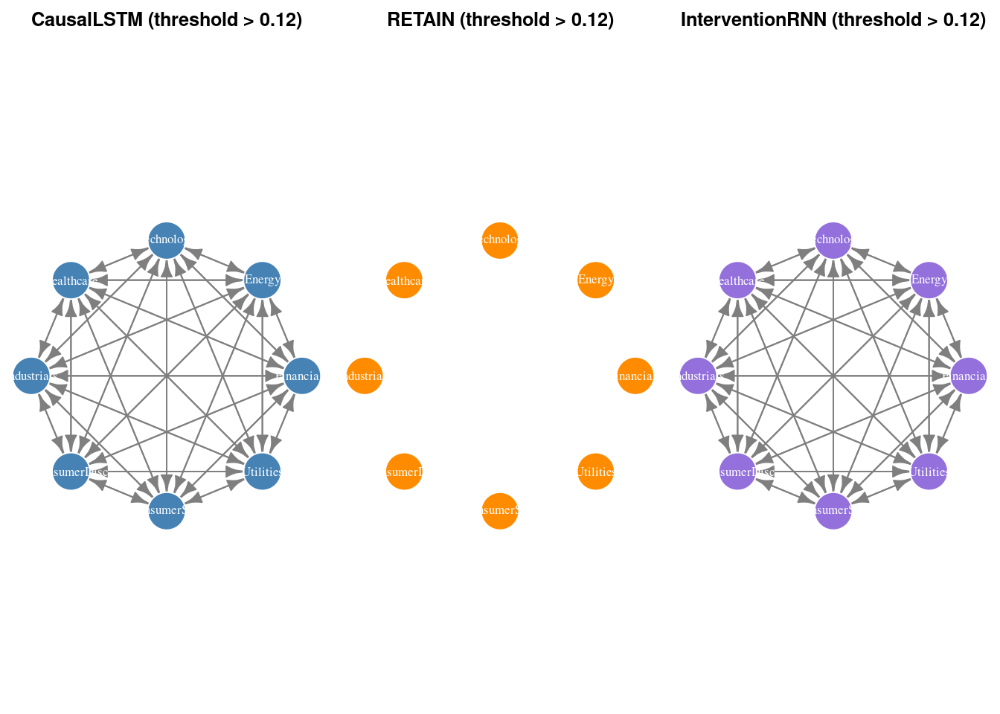
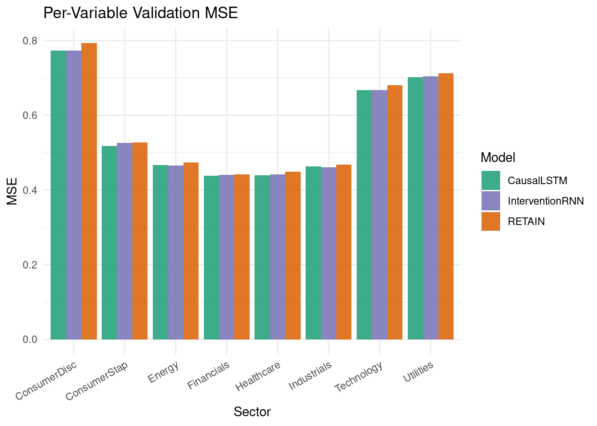
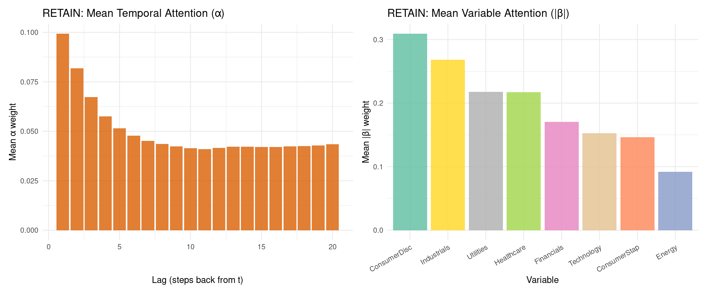
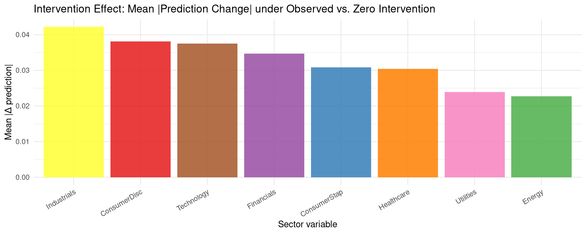

Code
packages <- c(
'tidyverse',
'plyr',
'RCausalML',
'torch',
'tidyquant',
'reshape2',
'scales',
'patchwork',
'igraph',
'zoo'
)
Recurrent Neural Networks (RNNs) and their gated variants process sequences step-by-step, maintaining a hidden state \(h_t\) that accumulates temporal causal history:
\[h_t = f(W_h h_{t-1} + W_x x_t + b)\]
Three architectural extensions turn this sequential memory into explicit causal machinery:
A standard LSTM augmented with a learnable causal adjacency mask \(G \in [0,1]^{d \times d}\) that gates which variables are allowed to influence variable \(i\):
\[\tilde{x}_t^{(i)} = G_{i,:} \odot x_t\]
The LSTM transitions for variable \(i\) are then computed on \([h_{t-1}; \tilde{x}_t^{(i)}]\). The mask is soft (continuous relaxation via sigmoid) during training and can be hardened to \(\{0,1\}\) at test time. An L1 sparsity penalty on off-diagonal entries encourages parsimonious graphs:
\[\mathcal{L}_{\text{sparse}} = \lambda \sum_{i \neq j} G_{ij}\]
RETAIN (Choi et al., 2016) processes input sequences in reverse order and learns two attention channels simultaneously:
The context vector is:
\[c = \sum_{t=1}^{T} \alpha_t \cdot (\beta_t \odot v_t)\]
A practical attribution score combining both channels:
\[\text{Contribution}(j, t) = \alpha_t \cdot |\beta_{t,j}| \cdot |w_j|\]
RETAIN’s dual-GRU architecture produces interpretable, attribution-based causal influence matrices that are especially useful when explaining model decisions to stakeholders.
To model changing data-generating regimes (policy changes, market shocks, clinical treatments), the input is augmented with learned regime embeddings and an explicit intervention indicator:
\[h_t = \text{LSTM}(h_{t-1},\ [x_t;\ r_t;\ I_t])\]
where \(r_t\) is a learned regime embedding (from a GRU-based regime detector) and \(I_t\) is an intervention indicator. A regime-conditioned causal weight matrix \(\Psi_k \in \mathbb{R}^{d \times d}\) is maintained per regime \(k\); the effective causal matrix is the regime-probability-weighted average.
We use RCausalML’s rnn_causal_model() function (and its convenience wrappers causal_lstm_model(), retain_model(), intervention_rnn_model()) to fit all three architectures on S&P 500 sector ETF daily log-return data (2018–2024).
packages <- c(
'tidyverse',
'plyr',
'RCausalML',
'torch',
'tidyquant',
'reshape2',
'scales',
'patchwork',
'igraph',
'zoo'
)# Install missing packages
#new_packages <- packages[!(packages %in% installed.packages()[,"Package"])]
#if(length(new_packages)) install.packages(new_packages)# When rendering from package root, use local RCausalML
if (file.exists("DESCRIPTION") && requireNamespace("devtools", quietly = TRUE)) {
try(devtools::load_all(".", quiet = TRUE), silent = TRUE)
}
invisible(lapply(packages, function(pkg) {
suppressPackageStartupMessages(library(pkg, character.only = TRUE))
}))set.seed(42)
device_use <- NULL
if (requireNamespace("torch", quietly = TRUE)) {
device_use <- if (torch::cuda_is_available()) "cuda" else "cpu"
torch::torch_manual_seed(42)
}
cat(sprintf("Using device: %s\n", device_use))Using device: cudaThis section downloads S&P 500 sector ETF prices (the same universe used in the companion notebooks), converts them to standardized log-returns, builds lagged input/output arrays for training, and derives a volatility-spike intervention proxy (top-25% rolling-variance days).
Note: If online market data is unavailable, the notebook automatically falls back to synthetic demo data so all downstream cells remain runnable.
TICKERS <- c(
"XLF" = "Financials",
"XLE" = "Energy",
"XLK" = "Technology",
"XLV" = "Healthcare",
"XLI" = "Industrials",
"XLY" = "ConsumerDisc",
"XLP" = "ConsumerStap",
"XLU" = "Utilities"
)
fetch_close_prices <- function(tickers, start = "2018-01-01", end = "2024-01-01") {
tryCatch({
raw <- tidyquant::tq_get(names(tickers), get = "stock.prices",
from = start, to = end, complete_cases = TRUE)
if (is.null(raw) || nrow(raw) == 0) return(NULL)
raw |>
dplyr::select(symbol, date, adjusted) |>
tidyr::pivot_wider(names_from = symbol, values_from = adjusted) |>
dplyr::arrange(date) |>
tidyr::drop_na()
}, error = function(e) NULL)
}
close_wide <- fetch_close_prices(TICKERS)
if (is.null(close_wide) || nrow(close_wide) < 30) {
message("Warning: market data unavailable; using synthetic demo data.")
set.seed(42)
n_steps <- 1600L
d_syn <- length(TICKERS)
A_syn <- matrix(0, d_syn, d_syn)
for (i in seq_len(d_syn)) {
A_syn[i, i] <- 0.45
if (i > 1) A_syn[i, i - 1] <- 0.25
if (i > 2 && i %% 2 == 1) A_syn[i, i - 2] <- 0.15
}
x_syn <- matrix(0, n_steps, d_syn)
x_syn[1, ] <- rnorm(d_syn)
noise_syn <- 0.15 * matrix(rnorm(n_steps * d_syn), n_steps, d_syn)
for (t in seq(2L, n_steps)) x_syn[t, ] <- x_syn[t - 1L, ] %*% t(A_syn) + noise_syn[t, ]
returns_df <- as.data.frame(x_syn)
colnames(returns_df) <- unname(TICKERS)
data_np <- scale(x_syn)
} else {
price_mat <- as.matrix(close_wide[, names(TICKERS)])
log_ret <- log(price_mat[-1L, ] / price_mat[-nrow(price_mat), ])
colnames(log_ret) <- unname(TICKERS[colnames(price_mat)])
returns_df <- as.data.frame(log_ret)
data_np <- scale(log_ret)
}
VAR_NAMES <- colnames(data_np)
d <- ncol(data_np)
Tt <- nrow(data_np)
cat(sprintf("d=%d variables, T=%d\n", d, Tt))d=8 variables, T=1508Variables: Financials, Energy, Technology, Healthcare, Industrials, ConsumerDisc, ConsumerStap, Utilities LAG <- 20L
AHEAD <- 1L
build_lag_dataset <- function(data, lag, ahead = 1L) {
N <- nrow(data) - lag - ahead + 1L
x_seq <- array(NA_real_, dim = c(N, lag, ncol(data)))
y_mat <- matrix(NA_real_, nrow = N, ncol = ncol(data))
for (t in seq_len(N)) {
x_seq[t, , ] <- data[t:(t + lag - 1L), , drop = FALSE]
y_mat[t, ] <- data[t + lag + ahead - 1L, ]
}
list(x_seq = x_seq, y_mat = y_mat)
}
lag_data <- build_lag_dataset(data_np, LAG, AHEAD)
X_seq <- lag_data$x_seq
Y_mat <- lag_data$y_mat
split <- floor(0.8 * nrow(X_seq))
X_tr <- X_seq[seq_len(split), , ]
X_val <- X_seq[(split + 1L):nrow(X_seq), , ]
Y_tr <- Y_mat[seq_len(split), ]
Y_val <- Y_mat[(split + 1L):nrow(Y_mat), ]
cat(sprintf("Train: (%d, %d, %d) Val: (%d, %d, %d)\n",
dim(X_tr)[1], dim(X_tr)[2], dim(X_tr)[3],
dim(X_val)[1], dim(X_val)[2], dim(X_val)[3]))Train: (1190, 20, 8) Val: (298, 20, 8)# Intervention proxy: top-25% rolling-variance days (volatility spikes)
roll_sd <- zoo::rollapply(data_np, width = 10, FUN = sd, by.column = TRUE,
fill = NA, align = "right")
if (!requireNamespace("zoo", quietly = TRUE)) {
roll_sd <- matrix(NA_real_, nrow(data_np), d)
for (j in seq_len(d)) {
for (t in seq(10L, nrow(data_np)))
roll_sd[t, j] <- sd(data_np[(t - 9L):t, j])
}
}
global_sd <- rowMeans(roll_sd, na.rm = TRUE)
global_sd[is.na(global_sd)] <- 0
threshold <- quantile(global_sd, 0.75)
I_raw <- as.numeric(global_sd > threshold)
cat(sprintf("Intervention rate: %.1f%%\n", 100 * mean(I_raw)))Intervention rate: 25.0%Intervention vector length: 1508In this section, we describe the three RNN/LSTM-based causal neural network models implemented in RCausalML and fitted using rnn_causal_model(). Each architecture is designed for multivariate time-series causal inference.
The R implementation of CausalLSTM in RCausalML:
nn_lstm fed the masked input \(G_{i,:} \odot x_t\).The R implementation of RETAIN in RCausalML:
hidden_alpha dimensions.The R implementation of InterventionAwareRNN in RCausalML:
regime_dim-vector, repeated along sequence length.regime_dim-vector per timestep.Input x_t (d variables)
│
├──────────────────────────────────────────────────┐
│ │
▼ ▼
RegimeDetector (GRU) Intervention Indicator I_t
│ │
▼ ▼
regime_embed (Linear) interv_proj (Linear)
│ │
└────────────────────┬─────────────────────────────┘
│
▼
Concatenate [x_t; r_t; I_t]
│
▼
LSTM Encoder
│
▼
Prediction Head (GELU MLP)
│
▼
Forecast ŷ (d variables)rnn_causal_model() is the single entry point that fits CausalLSTM, RETAIN, and the Intervention-Aware RNN in sequence. Internally it:
(lag, d) input/output tensors and an (lag,) intervention window per sample.cat("Fitting CausalLSTM, RETAIN, and Intervention-Aware RNN ...\n")Fitting CausalLSTM, RETAIN, and Intervention-Aware RNN ...rnn_fit <- rnn_causal_model(
data = data_np,
lag = LAG,
models = c("causal_lstm", "retain", "intervention_rnn"),
intervention = I_raw,
hidden = 64L,
n_layers = 2L,
n_regimes = 3L,
regime_dim = 8L,
hidden_alpha = 32L,
hidden_beta = 32L,
dropout = 0.2,
lam_sparse = 0.005,
epochs = 60L,
lr = 3e-4,
patience = 15L,
batch_size = 64L,
val_split = 0.2,
device = device_use,
verbose = TRUE
)
cat("\nTraining complete.\n")
Training complete.cat("Validation MSE:\n")Validation MSE: causal_lstm retain intervention_rnn
0.558168 0.568286 0.551570 val_mse_df <- data.frame(
Model = c("CausalLSTM", "RETAIN", "InterventionRNN"),
Val_MSE = unname(rnn_fit$val_mse)
) |> dplyr::arrange(Val_MSE)
print(val_mse_df) Model Val_MSE
1 InterventionRNN 0.5515701
2 CausalLSTM 0.5581682
3 RETAIN 0.5682858hist_list <- rnn_fit$histories
make_loss_df <- function(nm) {
h <- hist_list[[nm]]
if (is.null(h)) return(NULL)
n_ep <- sum(h$val != 0)
data.frame(
epoch = seq_len(n_ep),
val = h$val[seq_len(n_ep)],
train = h$train[seq_len(n_ep)],
model = nm
)
}
loss_df <- dplyr::bind_rows(lapply(names(hist_list), make_loss_df))
loss_df$model <- factor(loss_df$model,
levels = c("causal_lstm", "retain", "intervention_rnn"),
labels = c("CausalLSTM", "RETAIN", "InterventionRNN"))
ggplot(loss_df, aes(x = epoch, y = val, colour = model)) +
geom_line(linewidth = 0.9) +
scale_colour_manual(values = c(
"CausalLSTM" = "#1b9e77",
"RETAIN" = "#d95f02",
"InterventionRNN"= "#7570b3"
)) +
labs(
title = "Validation Loss Curves — RNN/LSTM Causal Models",
x = "Epoch",
y = "MSE",
colour = NULL
) +
theme_minimal()
plot_model_loss <- function(nm, label, colour) {
h <- hist_list[[nm]]
if (is.null(h)) return(NULL)
n_ep <- sum(h$val != 0)
df <- data.frame(
epoch = seq_len(n_ep),
Train = h$train[seq_len(n_ep)],
Val = h$val[seq_len(n_ep)]
) |> tidyr::pivot_longer(-epoch, names_to = "split", values_to = "loss")
ggplot(df, aes(x = epoch, y = loss, colour = split)) +
geom_line(linewidth = 0.85) +
scale_colour_manual(values = c("Train" = colour, "Val" = "grey40")) +
labs(title = label, x = "Epoch", y = "MSE", colour = NULL) +
theme_minimal(base_size = 9)
}
p1 <- plot_model_loss("causal_lstm", "CausalLSTM", "#1b9e77")
p2 <- plot_model_loss("retain", "RETAIN", "#d95f02")
p3 <- plot_model_loss("intervention_rnn", "InterventionRNN", "#7570b3")
patchwork::wrap_plots(p1, p2, p3, ncol = 3)
For each model, the learned causal matrix \(C \in \mathbb{R}^{d \times d}\) encodes variable-to-variable influence:
C_lstm <- causal_matrix_rnn(rnn_fit, model = "causal_lstm")
C_retain <- causal_matrix_rnn(rnn_fit, model = "retain")
C_interv <- causal_matrix_rnn(rnn_fit, model = "intervention_rnn")
cat("CausalLSTM causal matrix (first 3 rows):\n")CausalLSTM causal matrix (first 3 rows): Financials Energy Technology Healthcare Industrials ConsumerDisc
Financials 1.0000 0.4821 0.4822 0.4822 0.4822 0.4821
Energy 0.4822 1.0000 0.4821 0.4822 0.4822 0.4821
Technology 0.4822 0.4822 1.0000 0.4822 0.4822 0.4822
ConsumerStap Utilities
Financials 0.4823 0.4823
Energy 0.4822 0.4823
Technology 0.4822 0.4822
Diagonal (all 1 — guaranteed by mask design): 1 1 1 1 1 1 1 1 plot_causal_heatmap <- function(C, title, var_names) {
A <- as.matrix(C)
diag(A) <- NA_real_
rownames(A) <- var_names
colnames(A) <- var_names
df <- reshape2::melt(A, na.rm = TRUE)
colnames(df) <- c("Target", "Source", "Weight")
df$Target <- factor(df$Target, levels = rev(var_names))
df$Source <- factor(df$Source, levels = var_names)
ggplot(df, aes(x = Source, y = Target, fill = Weight)) +
geom_tile(colour = "white") +
geom_text(aes(label = round(Weight, 2)), size = 2.5, colour = "black") +
scale_fill_gradient(low = "white", high = "#2C7BB6",
na.value = "grey90", name = "Weight") +
labs(title = title, x = "Source (cause)", y = "Target (effect)") +
theme_minimal(base_size = 9) +
theme(axis.text.x = element_text(angle = 30, hjust = 1))
}
p_lstm <- plot_causal_heatmap(C_lstm, "CausalLSTM — Learned Mask", VAR_NAMES)
p_retain <- plot_causal_heatmap(C_retain, "RETAIN — Beta Attribution", VAR_NAMES)
p_interv <- plot_causal_heatmap(C_interv, "InterventionRNN — Regime-Avg Matrix", VAR_NAMES)
patchwork::wrap_plots(p_lstm, p_retain, p_interv, ncol = 3)
draw_rnn_igraph <- function(C, title, var_names, threshold = 0.12,
node_colour = "steelblue") {
M <- as.matrix(C)
M[is.na(M)] <- 0.0
A_bin <- (M > threshold) * 1L
diag(A_bin) <- 0L
g <- igraph::graph_from_adjacency_matrix(
A_bin, mode = "directed", weighted = NULL, diag = FALSE
)
igraph::V(g)$name <- var_names
igraph::V(g)$color <- node_colour
igraph::V(g)$label <- var_names
igraph::V(g)$size <- 28
igraph::V(g)$label.color <- "white"
igraph::V(g)$label.cex <- 0.8
igraph::E(g)$color <- "grey50"
igraph::E(g)$arrow.size <- 0.6
old_par <- par(mar = c(0, 0, 2, 0))
plot(g,
layout = igraph::layout_in_circle(g),
main = title,
vertex.frame.color = "white")
par(old_par)
}
par(mfrow = c(1, 3))
draw_rnn_igraph(C_lstm, "CausalLSTM (threshold > 0.12)", VAR_NAMES, 0.12, "steelblue")
draw_rnn_igraph(C_retain, "RETAIN (threshold > 0.12)", VAR_NAMES, 0.12, "darkorange")
draw_rnn_igraph(C_interv, "InterventionRNN (threshold > 0.12)",VAR_NAMES, 0.12, "mediumpurple")
graph_stats_rnn <- function(C, threshold = 0.12, name = "") {
M <- as.matrix(C)
M[is.na(M)] <- 0.0
A_bin <- (M > threshold) * 1L
diag(A_bin) <- 0L
g <- igraph::graph_from_adjacency_matrix(
A_bin, mode = "directed", weighted = NULL, diag = FALSE
)
d_n <- igraph::gorder(g)
e_n <- igraph::gsize(g)
dens <- if (d_n > 1) e_n / (d_n * (d_n - 1)) else 0.0
data.frame(
model = name,
nodes = d_n,
edges = e_n,
density = round(dens, 4),
is_dag = igraph::is_dag(g),
max_in_degree = if (d_n > 0) max(igraph::degree(g, mode = "in")) else 0L,
max_out_degree = if (d_n > 0) max(igraph::degree(g, mode = "out")) else 0L
)
}
stats_all <- do.call(rbind, list(
graph_stats_rnn(C_lstm, 0.12, "CausalLSTM"),
graph_stats_rnn(C_retain, 0.12, "RETAIN"),
graph_stats_rnn(C_interv, 0.12, "InterventionRNN")
))
rownames(stats_all) <- NULL
cat("Graph statistics (threshold = 0.12):\n")Graph statistics (threshold = 0.12):print(stats_all) model nodes edges density is_dag max_in_degree max_out_degree
1 CausalLSTM 8 56 1 FALSE 7 7
2 RETAIN 8 0 0 TRUE 0 0
3 InterventionRNN 8 56 1 FALSE 7 7pred_lstm <- predict(rnn_fit, model = "causal_lstm", newdata = X_val)
pred_retain <- predict(rnn_fit, model = "retain", newdata = X_val)
pred_interv <- predict(rnn_fit, model = "intervention_rnn", newdata = X_val,
intervention = matrix(0.0, nrow(X_val), LAG)) # zero-intervention baseline
mse_lstm <- mean((pred_lstm - Y_val)^2)
mse_retain <- mean((pred_retain - Y_val)^2)
mse_interv <- mean((pred_interv - Y_val)^2)
val_df <- data.frame(
model = c("CausalLSTM", "RETAIN", "InterventionRNN"),
val_mse = c(mse_lstm, mse_retain, mse_interv)
)
cat("Validation MSE (next-step reconstruction):\n")Validation MSE (next-step reconstruction):print(val_df) model val_mse
1 CausalLSTM 0.5581682
2 RETAIN 0.5682859
3 InterventionRNN 0.5598102ggplot(val_df, aes(x = reorder(model, val_mse), y = val_mse, fill = model)) +
geom_col(show.legend = FALSE, alpha = 0.85) +
scale_fill_manual(values = c(
"CausalLSTM" = "#1b9e77",
"RETAIN" = "#d95f02",
"InterventionRNN" = "#7570b3"
)) +
coord_flip() +
labs(
title = "Validation MSE by Model",
x = NULL,
y = "Mean Squared Error"
) +
theme_minimal()
per_var_mse <- data.frame(
variable = VAR_NAMES,
CausalLSTM = colMeans((pred_lstm - Y_val)^2),
RETAIN = colMeans((pred_retain - Y_val)^2),
InterventionRNN = colMeans((pred_interv - Y_val)^2)
)
cat("Per-variable MSE:\n")Per-variable MSE:print(data.frame(
variable = per_var_mse$variable,
round(per_var_mse[, -1], 5)
)) variable CausalLSTM RETAIN InterventionRNN
1 Financials 0.43795 0.44160 0.44041
2 Energy 0.46722 0.47386 0.46605
3 Technology 0.66697 0.68005 0.66716
4 Healthcare 0.43903 0.44885 0.44157
5 Industrials 0.46310 0.46780 0.46076
6 ConsumerDisc 0.77256 0.79367 0.77289
7 ConsumerStap 0.51719 0.52776 0.52606
8 Utilities 0.70132 0.71271 0.70359pv_long <- tidyr::pivot_longer(per_var_mse, -variable,
names_to = "model", values_to = "mse")
ggplot(pv_long, aes(x = variable, y = mse, fill = model)) +
geom_col(position = "dodge", alpha = 0.85) +
scale_fill_manual(values = c(
"CausalLSTM" = "#1b9e77",
"RETAIN" = "#d95f02",
"InterventionRNN"= "#7570b3"
)) +
labs(
title = "Per-Variable Validation MSE",
x = "Sector",
y = "MSE",
fill = "Model"
) +
theme_minimal() +
theme(axis.text.x = element_text(angle = 30, hjust = 1))
RETAIN’s dual-channel attention produces interpretable attribution scores. We extract alpha (temporal importance) and beta (variable importance) from the validation set and visualise them.
retain_mod <- rnn_fit$models[["retain"]]
retain_mod$eval()
dev_use <- if (is.null(device_use)) "cpu" else device_use
n_plot <- min(200L, nrow(X_val))
x_sub <- torch::torch_tensor(X_val[seq_len(n_plot), , ],
dtype = torch::torch_float32(),
device = dev_use)
retain_out <- torch::with_no_grad({ retain_mod$forward(x_sub) })
# Alpha: temporal attention (n_plot x LAG)
alpha_mat <- as.matrix(retain_out$alpha$cpu())
alpha_mean <- colMeans(alpha_mat)
# Beta: variable attention averaged over time (n_plot x d)
beta_3d <- retain_out$beta$abs()$cpu()
beta_mat <- as.matrix(beta_3d$mean(dim = 2L)) # (n_plot, d)
beta_mean <- colMeans(beta_mat)
# --- Plot 1: Mean temporal attention across validation set ---
alpha_df <- data.frame(
lag = seq_len(LAG),
weight = alpha_mean
)
p_alpha <- ggplot(alpha_df, aes(x = lag, y = weight)) +
geom_col(fill = "#d95f02", alpha = 0.8) +
labs(
title = "RETAIN: Mean Temporal Attention (α)",
x = "Lag (steps back from t)",
y = "Mean α weight"
) +
theme_minimal()
# --- Plot 2: Mean variable attention ---
beta_df <- data.frame(
variable = VAR_NAMES,
weight = beta_mean
)
p_beta <- ggplot(beta_df, aes(x = reorder(variable, -weight), y = weight, fill = variable)) +
geom_col(show.legend = FALSE, alpha = 0.85) +
scale_fill_brewer(palette = "Set2") +
labs(
title = "RETAIN: Mean Variable Attention (|β|)",
x = "Variable",
y = "Mean |β| weight"
) +
theme_minimal() +
theme(axis.text.x = element_text(angle = 30, hjust = 1))
patchwork::wrap_plots(p_alpha, p_beta, ncol = 2)
For the Intervention-Aware RNN we compare predictions under zero-intervention vs. the observed intervention signal on the validation set.
interv_mod <- rnn_fit$models[["intervention_rnn"]]
interv_mod$eval()
dev_use <- if (is.null(device_use)) "cpu" else device_use
n_plot <- min(200L, nrow(X_val))
x_sub_t <- torch::torch_tensor(X_val[seq_len(n_plot), , ],
dtype = torch::torch_float32(),
device = dev_use)
# Reconstruct the intervention window for validation samples using X_val rows
n_full <- nrow(X_val)
# X_val rows come from positions (split+1):(N) of X_seq, which map to time
# indices (split+1):(N) in the lagged dataset, i.e. original rows (split+1+LAG-1)...
I_val_win <- matrix(0.0, n_full, LAG)
offset <- split # first validation sample starts at row split+1 in X_seq
for (t in seq_len(n_full)) {
ts <- offset + t # position in X_seq (1-indexed)
i_st <- ts # original series index for the lag window start
i_en <- ts + LAG - 1L
if (i_en <= length(I_raw))
I_val_win[t, ] <- I_raw[i_st:i_en]
}
I_val_win <- pmin(pmax(I_val_win, 0), 1)
i_obs_t <- torch::torch_tensor(I_val_win[seq_len(n_plot), ],
dtype = torch::torch_float32(),
device = dev_use)
i_zero_t <- torch::torch_zeros_like(i_obs_t)
out_obs <- torch::with_no_grad({ interv_mod$forward(x_sub_t, interv = i_obs_t) })
out_zero <- torch::with_no_grad({ interv_mod$forward(x_sub_t, interv = i_zero_t) })
pred_obs <- as.matrix(out_obs$pred$cpu())
pred_zero <- as.matrix(out_zero$pred$cpu())
# Average absolute prediction difference per variable
diff_df <- data.frame(
variable = VAR_NAMES,
avg_diff = colMeans(abs(pred_obs - pred_zero))
)
ggplot(diff_df, aes(x = reorder(variable, -avg_diff), y = avg_diff, fill = variable)) +
geom_col(show.legend = FALSE, alpha = 0.85) +
scale_fill_brewer(palette = "Set1") +
labs(
title = "Intervention Effect: Mean |Prediction Change| under Observed vs. Zero Intervention",
x = "Sector variable",
y = "Mean |Δ prediction|"
) +
theme_minimal() +
theme(axis.text.x = element_text(angle = 30, hjust = 1))
In practice, combining these models is often powerful:
In this notebook, we explored causal modelling approaches using temporal deep learning models on multivariate S&P 500 sector ETF data. We compared three architectures — CausalLSTM, RETAIN, and Intervention-Aware RNN — on predictive accuracy and causal interpretability.
Key Findings:
Conclusions and Recommendations:
rnn_causal_model(), causal_matrix_rnn(), predict.rnn_causal_model() — main API for this notebook.05-04-01-DeepCausalML-timeseries-neural-granger-cusuality-r.qmd — Neural Granger Causality (cMLP, cLSTM, SRU, NRI) on the same sector ETF universe.05-04-02-DeepCausalML-timeseries-structural-causal-model-SMC-r.qmd — Deep Structural Causal Models: DeepSCM, DECI, DynoTEARS on sector ETF data.05-04-03-DeepCausalML-attension-transformer-r.qmd — Attention-Based/Transformer Causal Models: TCDF, CausalTransformer, TFT on sector ETF data.05-03-05-DeepCausalML-causal-structural-learning-regularization-CASTLE-r.qmd — CASTLE: simultaneous supervised prediction and causal graph discovery.